未確定事項と判断してほしい点
残る判断は結びの表現だけです。ほかの節は現行の指示です。番号3は従来の判断番号を維持しています。
- 3結びを現行の本人の決定「自分に許します」で閉じるか、原稿の問いかけ「許してみてもいいのではないでしょうか」に戻すか。現行案は前者です。カット10
この動画で伝える一文
出張では刺激を得られる一方、回復に使える余白を失う。刺激を受け取り続けるために、疲れきる前に立ち止まる。
「充実した出張の疲れは、帰ってから休めば戻る」という思い込みに対して、今の生活では、その回復に使える時間自体が残っていないことを伝えます。刺激を否定せず、余白を前提に選んでよいという気持ちを残します。本人の実感として語り、全員への保証にはしません。
視聴者
出張や移動で学びや出会いを得ながら、翌日の作業や生活に疲れを持ち越す人。家庭の有無は視聴者の条件にしません。
構成と尺
声は経緯、文字は「得られる／失われる」の対比、図は一つのキャパの中の変化を運びます。学び・新しい出会い・縁を「得られたもの」の内訳に置き、回復する時間や、やれたはずのことを失う側へ視線を移します。07〜09では生活・休息・お酒のイラストを短く差し込みます。
| カット | 役割 | 参考区間 | 声／文字 |
|---|---|---|---|
| 01 刺激は、得られる。余白は、失われる。 | 主張 | 0:00–0:07（7秒） | 34字／14字 |
| 02 得られるものの、内訳。 | 根拠 | 0:07–0:15（8秒） | 32字／8字 |
| 03 楽しいのに、体が重い。 | 根拠 | 0:15–0:23（8秒） | 39字／9字 |
| 04 得られたものは、残る。 | 留保 | 0:23–0:31（8秒） | 37字／10字 |
| 05 その間に、できたはずのこと。 | 根拠 | 0:31–0:40（9秒） | 43字／17字 |
| 06 日常は、待ってくれない。 | 根拠 | 0:40–0:50（10秒） | 37字／12字 |
| 07 時間は、自分だけのものではない。 | 根拠 | 0:50–1:01（11秒） | 49字／17字 |
| 08 予防が、先。 | 主張 | 1:01–1:10（9秒） | 38字／13字 |
| 09 それでも、無理はする。 | 根拠と留保 | 1:10–1:19（9秒） | 35字／19字 |
| 10 自分に許す。 | 本人の結論 | 1:19–1:31（12秒） | 50字／29字 |
声は計394字、画面の主文・内訳は計148字（空白・句読点を除く、共通の図のラベルは別）。本編91秒＋ロゴ5秒の参考尺を維持。イラストは各カットの中に約3秒ずつ挿入し、尺を足しません。音声の実尺と等速再生は制作時に確認し、読みにくい場合は文量・構図・配分を調整します。
カット表・絵コンテ
1280×720、明るい背景の構図ラフです。共通の箱は「自分のキャパ」を示す比喩で、実測の割合や、学びと疲労の交換率ではありません。内部は、琥珀＝得られたもの、灰＝移動・予定などの負荷、白＝回復に使える余白。得たものを残したまま、負荷が白を押し狭めます。家族を負荷の物体として箱に詰めません。
絵コンテは構図と意味の受け渡しを示します。具体的な字組みの仕上げ、立体感、カメラの軌道、動きの調整は制作側に任せます。
刺激は、得られる。余白は、失われる。
0:00–0:07 / 約7秒 ・ 主張

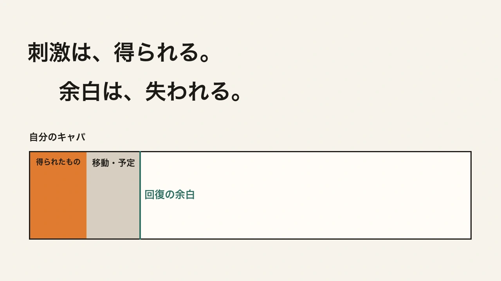

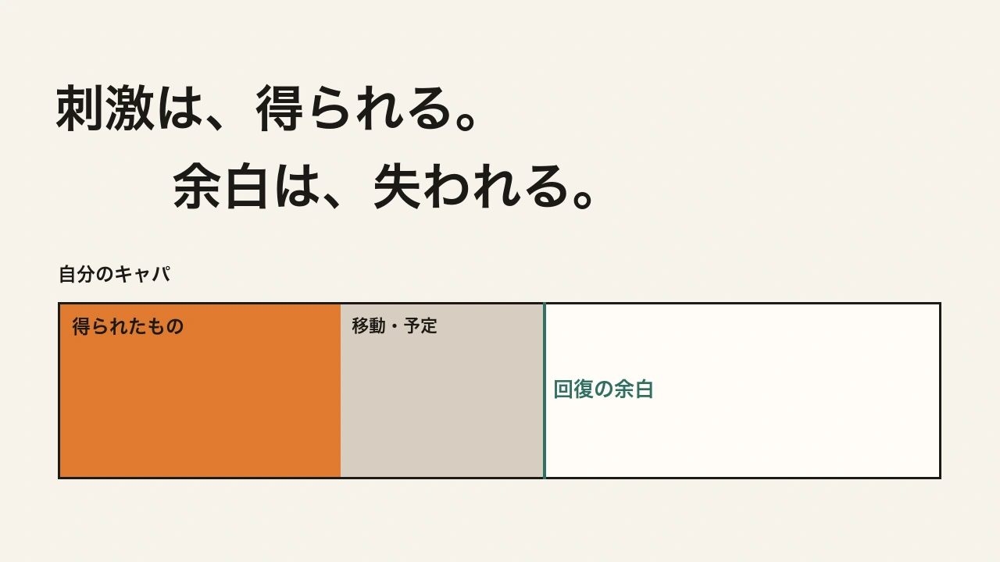
刺激は、得られる。
余白は、失われる。
出張では、刺激が得られます。その一方で、回復に使える余白は失われていきます。
「得られる。」「失われる。」を同じ強さで見せる。刺激は価値、余白は使える時間と体力として区別する。
上に対になる二行、下に横長の一つの箱。別々のメーターにせず、共通の外枠と動く内側の境界を見せる。
箱の層が大きく寄り、内側の琥珀と灰の面が横へせり出す。白い領域が同時に狭まる。文字は二行を逆方向のマスクから入れ、読む間も行の位置関係と箱の寄りを変える。
一つの箱を維持し、琥珀の面へ寄ることで02の内訳を見せる。
共通のキャパの箱と文字・図形。追加の画像・動画は使わない。
得られるものの、内訳。
0:07–0:15 / 約8秒 ・ 根拠

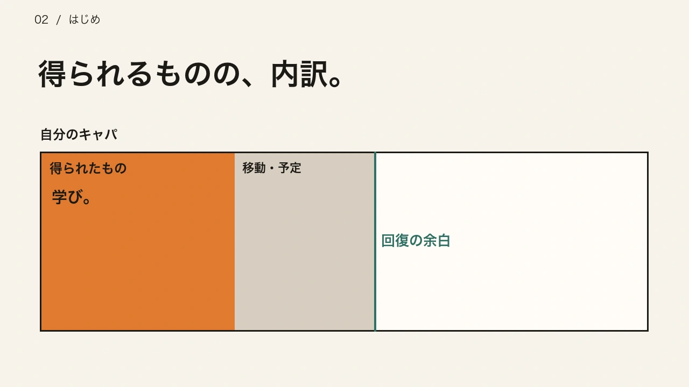

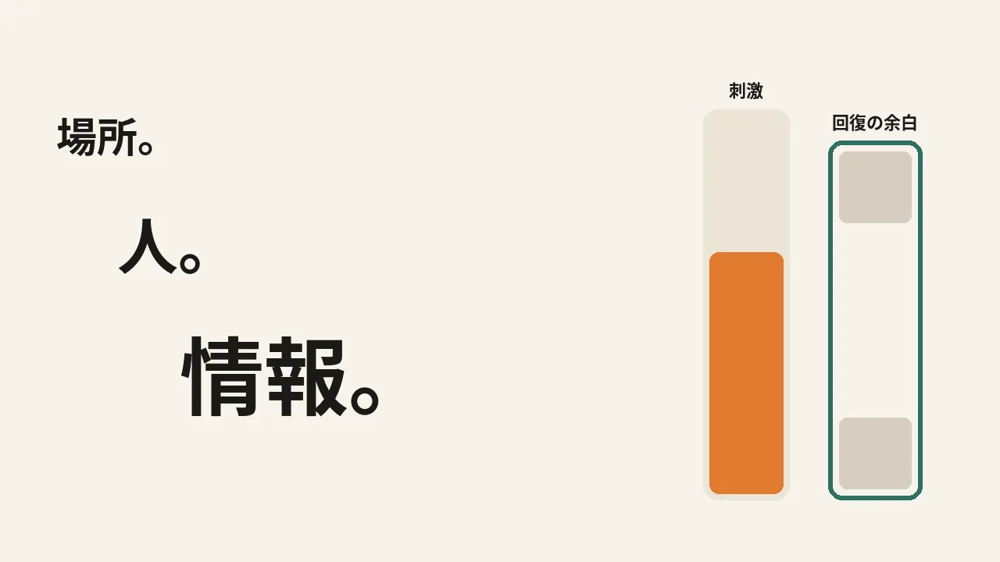
学び。
新しい出会い。
普段行かない場所での学び。いつもと違う人との、新しい出会いがあります。
「学び。」から「新しい出会い。」へ主役を受け渡す。場所・人・情報を別のメーターにはしない。
箱を大きく画面中央に置き、内訳の二語を琥珀の面の中で縦に組む。余白は同じ枠の右側。
琥珀の面の中へTruckで横移動。語の塊が大きく着地し、内訳として並び直す。白い領域は押されるが、ここでは失いきらない。
得られた二語を箱の中に保ち、03では外側の大きな文字に視線を移す。
共通のキャパの箱と文字・図形。追加の画像・動画は使わない。
楽しいのに、体が重い。
0:15–0:23 / 約8秒 ・ 根拠

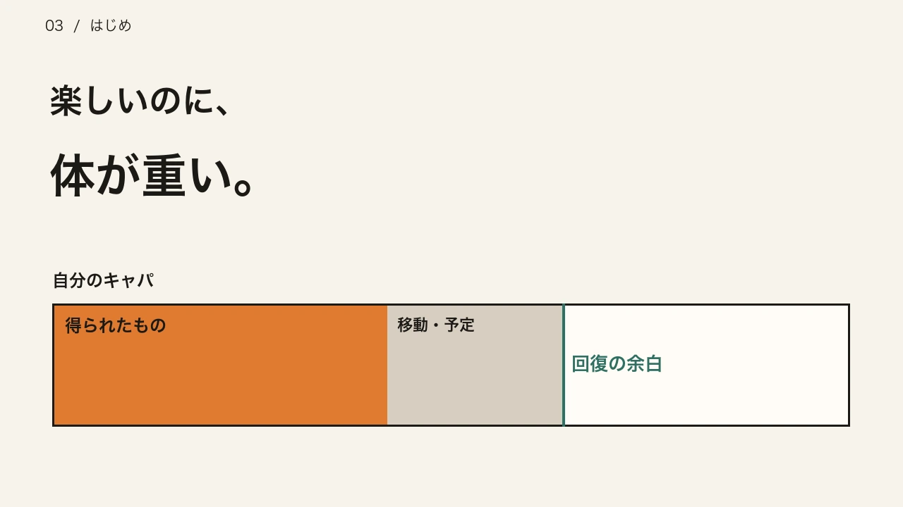

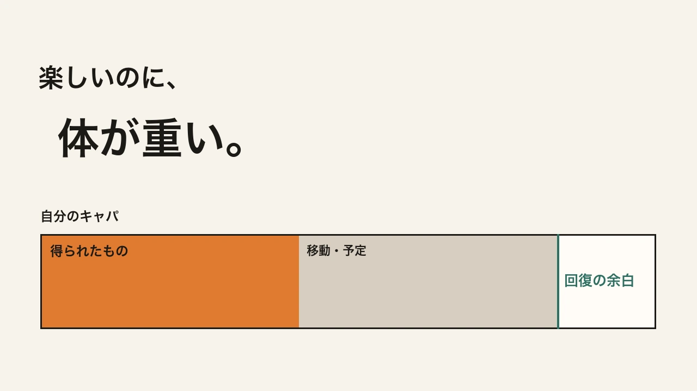
楽しいのに、
体が重い。
楽しいはずなのに、帰ると体が重い。得られたものがあっても、回復の余白は削られています。
「体が重い。」を大きく下へ。楽しさや学びを消して、出張が無価値だったという絵にはしない。
上の小さい行と下の大きい行。箱は画面右下へ寄せる。図の向きと色の意味は維持。
文字の塊を下へ押し出し、箱は斜めに大きく移動。読む間に灰と白の境界へ寄る。文字そのものは揺らさない。
狭い余白と得たものを04へ引き継ぐ。
共通のキャパの箱と文字・図形。追加の画像・動画は使わない。
得られたものは、残る。
0:23–0:31 / 約8秒 ・ 留保

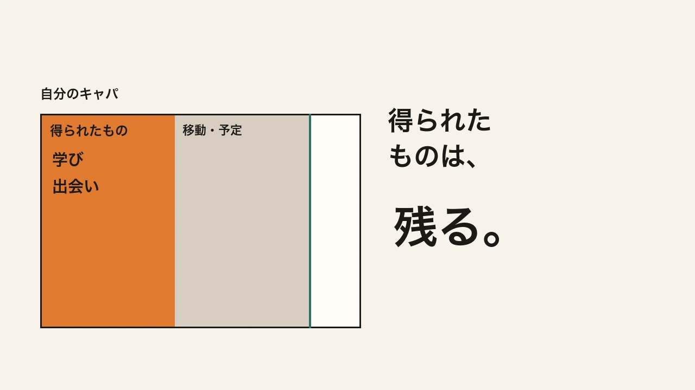

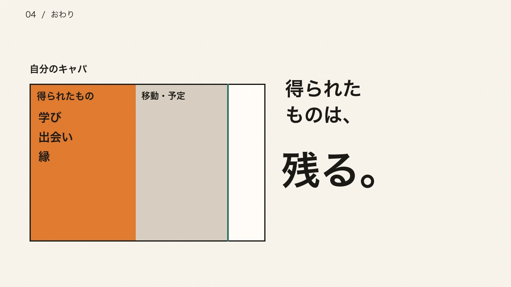
得られたものは、
残る。
縁。
学びや新しい出会いから、人の縁も残りました。出張で得られたものは、確かにあります。
「残る。」を強く見せる。「挨拶」と「縁」を同列に並べず、得られたものの中身を学び・新しい出会い・縁として示す。
箱を左、結論の大きな二行を右。琥珀の内訳は小さくしても読める位置へまとめる。
琥珀の領域に寄った画面から大きく引き、右の「残る。」を押し出す。「縁。」は塊として面の中へ収まる。白い領域の幅は回復させない。
得たものを保ったまま、05では使えなかった時間に焦点を移す。
共通のキャパの箱と文字・図形。追加の画像・動画は使わない。
その間に、できたはずのこと。
0:31–0:40 / 約9秒 ・ 根拠

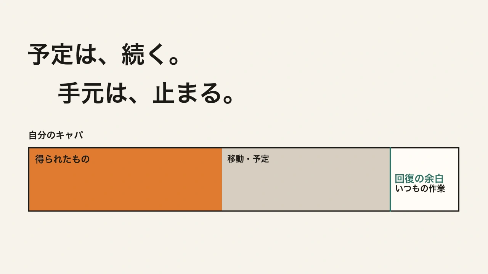

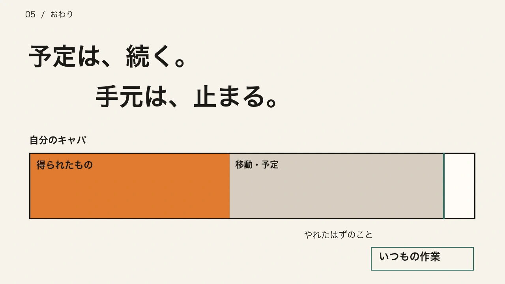
予定は、続く。
手元は、止まる。
いつもの作業
予定は続き、移動のあいだに手元の作業は止まります。その間に、できたはずのことが残っていきます。
「続く。」「止まる。」の対比と、外に残る「いつもの作業」。出来事の数や仕事の成果を数値化しない。
上半分に逆向きの二行。下半分に横長の箱。箱の外側に、機会を失った作業の札が残る。
上の行は右へ、下の行は左へ流れ、箱の内側の境界が押していく。「いつもの作業」の札は白い領域から押し出され、画面に残る。
押し出された札と狭い白を保ち、06で翌日が来る。
共通のキャパの箱と文字・図形。追加の画像・動画は使わない。
日常は、待ってくれない。
0:40–0:50 / 約10秒 ・ 根拠

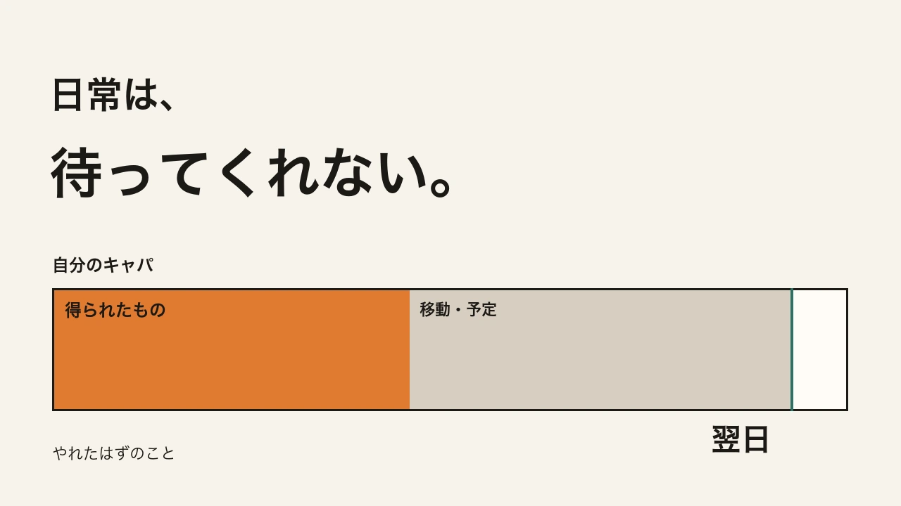

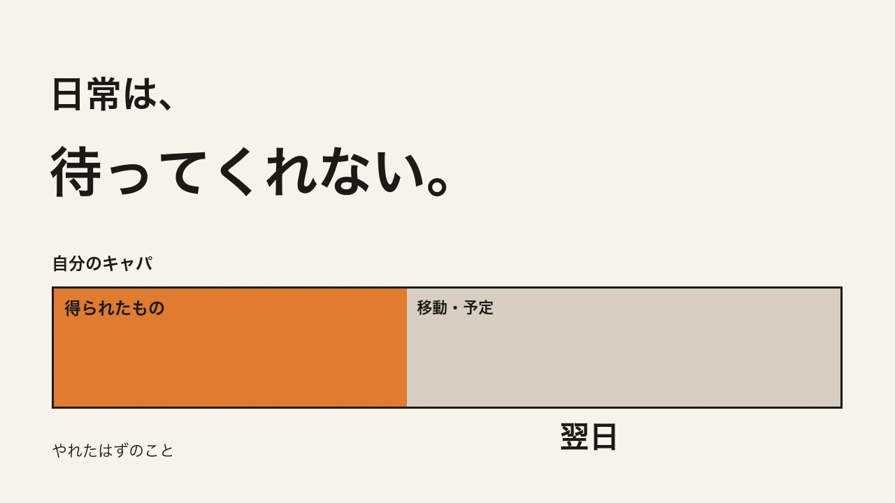
日常は、
待ってくれない。
翌日
帰った夜にも作業が残り、翌日はいつもの生活が始まります。日常は、待ってくれません。
「待ってくれない。」を横断する大きさへ。「翌日」は負荷側に置き、生活そのものを悪役にしない。
上に広い二行、下に一つの箱。箱の境界が閉じる瞬間へ視線を寄せる。
「翌日」がWhip panで入る。灰と白の境界が閉じた後はその状態を保ち、文字と画面の横移動を続ける。フラッシュや常時のぶれは使わない。
ゼロの余白と外に残る時間を07へ渡し、生活の具体像をインサートする。
共通のキャパの箱と文字・図形。追加の画像・動画は使わない。
時間は、自分だけのものではない。
0:50–1:01 / 約11秒 ・ 根拠

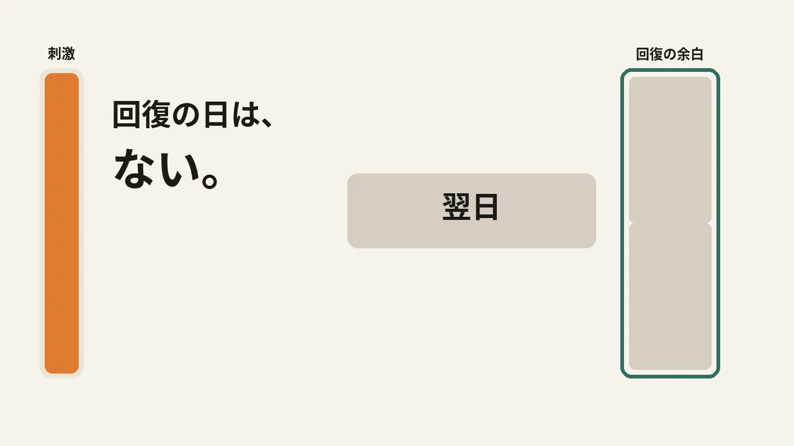

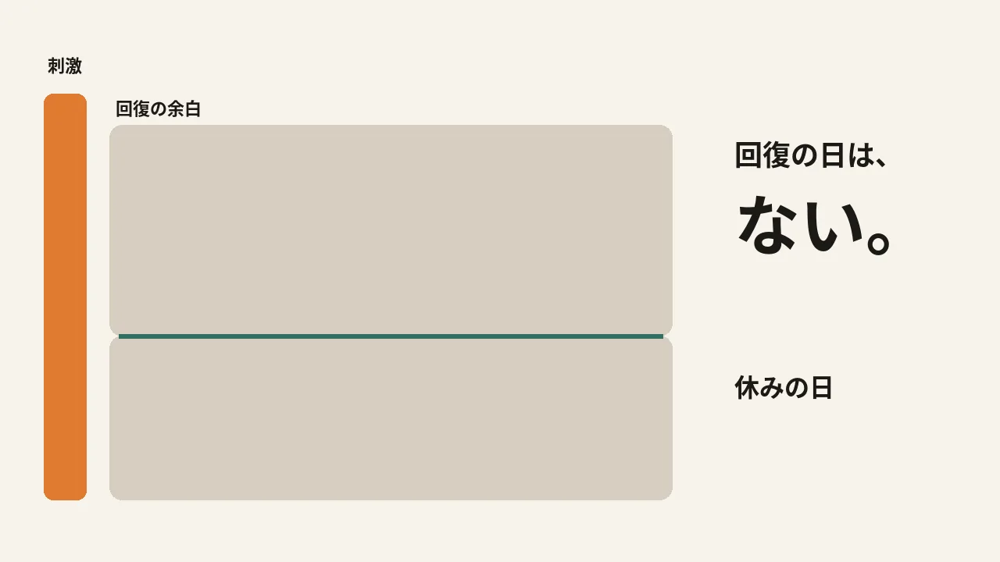
使える時間は、
自分だけのものではない。
休みの日も、回復のためだけには使えません。今の生活では、使える時間は自分だけのものではなくなっていきます。
「自分だけのものではない。」が主役。「子供」「家族」「奥さん」「娘」は画面にも声にも出さず、暮らしの具体像だけをイラストで補う。
左の短い行と、右の横長のインサート。下の箱は得たものと閉じた余白を保つ。
箱の外に残った時間の札から、Bロールの窓を大きく開く。絵の中へ寄りながら窓ごと横へ送る。二人を負荷の灰に入れたり、押しつぶしたりしない。読む行も段階的に位置を変える。
生活の窓を閉じる動きから、08の休息の窓へマッチカット。余白がない状態を解決済みにしない。
family-time.webp。0:52–0:55（参考3秒）。採用済みの静止画を寄り・横移動・窓のマスクでBロールにする。本人の記録写真ではなく、生活を表すイラスト。文字は絵の外の紙色の面へ置く。

予防が、先。
1:01–1:10 / 約9秒 ・ 主張

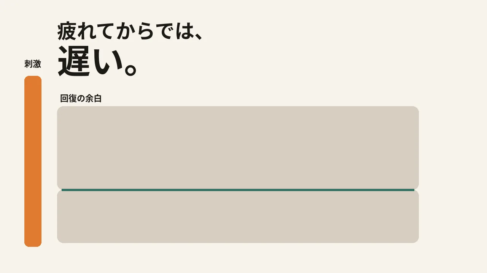

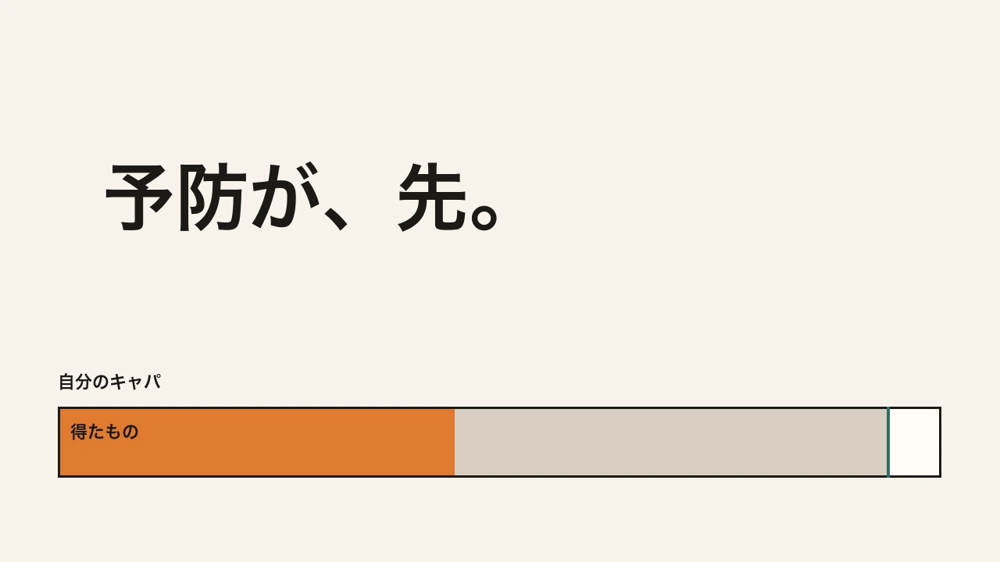
疲れてからでは、遅い。
予防が、先。
だから、疲れてから立て直すのでは遅い。疲れを溜めこまないために、先に立ち止まります。
「予防が、先。」。予防は疲れを溜めないための休息・立ち止まりの意味で、医療の比喩にしない。
左に大きな語、右に休息のインサート。下の共通の箱は小さく保ち、白い領域をわずかに確保する。
休息の窓を大きくスライドさせ、見出しと構図を組み替える。境界に墨の線を一筆で描き、ごく細い白を確保する。これは方針の図で、休めば即座に回復する経過の再現ではない。
休息の窓が抜ける方向を引き継ぎ、09では飲みすぎないことへ。
rest-before-exhaustion.webp。1:03–1:06（参考3秒）。採用済みの静止画を寄り・横移動・窓のマスクでBロールにする。本人の記録写真ではなく、生活を表すイラスト。文字は絵の外の紙色の面へ置く。

それでも、無理はする。
1:10–1:19 / 約9秒 ・ 根拠と留保

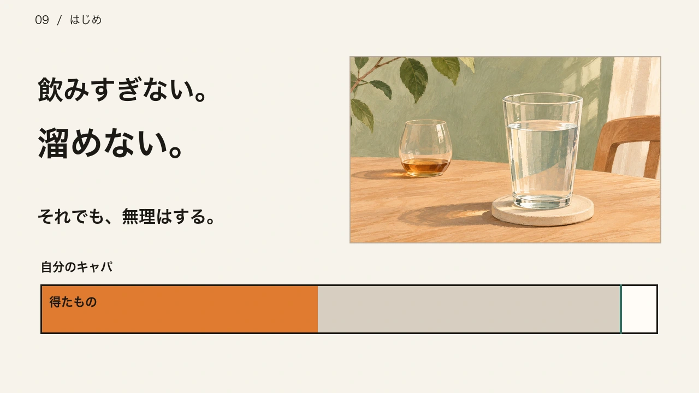

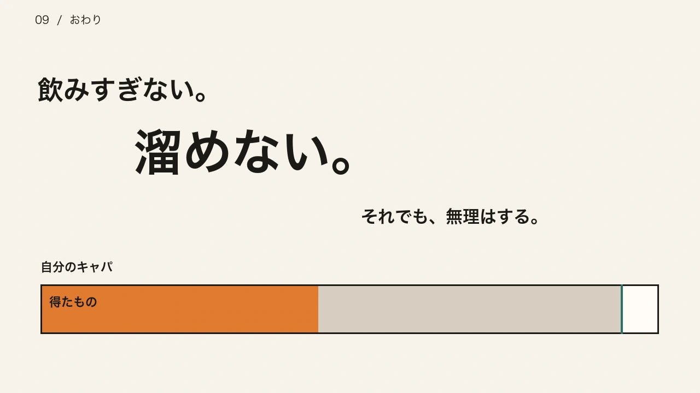
飲みすぎない。
溜めない。
それでも、無理はする。
飲みすぎない。疲れを溜めない。それでも、わかっていて無理をすることはあります。
「溜めない。」が最大。留保の一行は小さくても読める大きさで残す。酒を禁止する話に変えない。
左の二行と、右の酒器・水の窓。最後は窓を退け、右下に留保を組む。
酒器から水に向かう横移動と窓の押し出しを使う。文字は行単位で入れ替わり、留保へ大きく画面を移す。白い領域は広げない。
同じ比率の箱を小さくし、10の本人の結論へ。
drink-in-moderation.webp。1:10–1:13（参考3秒）。採用済みの静止画を寄り・横移動・窓のマスクでBロールにする。本人の記録写真ではなく、生活を表すイラスト。文字は絵の外の紙色の面へ置く。

自分に許す。 要判断 3
1:19–1:31 / 約12秒 ・ 本人の結論

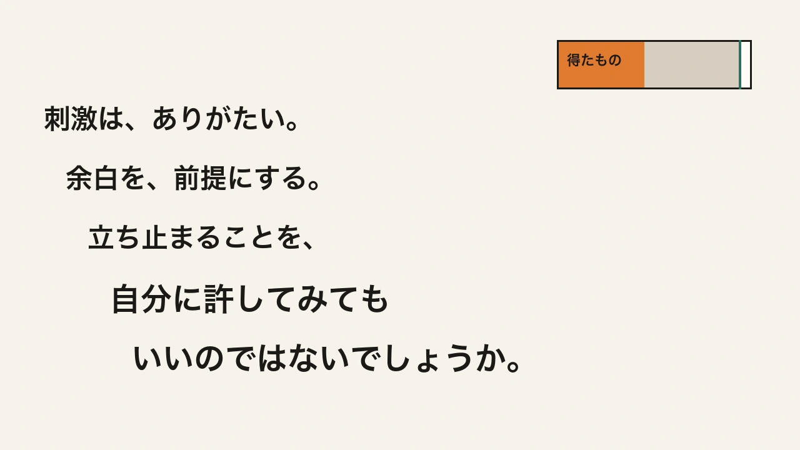

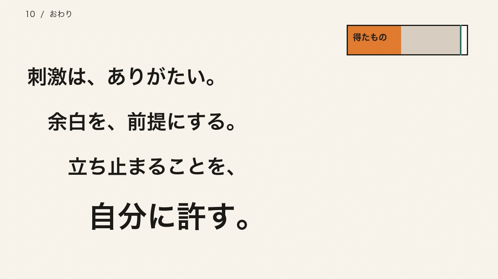
刺激は、ありがたい。
余白を、前提にする。
立ち止まることを、
自分に許す。
刺激は、ありがたい。受け取り続けるには、回復の余白を前提にします。疲れきる前に立ち止まることを、自分に許します。
「自分に許す。」で閉じる。結びの言い切り／問いかけだけは要判断3。
箱を隅に縮め、四行を階段に組む。冒頭の得られる／失われると同じ意味を、今後の選び方に着地させる。
箱を大きく引いて余白をつくり、行を順に押し出す。最後の行が最大になる。読む間も行の塊と画面の引きを続け、字形は崩さない。
本文とナレーションを終えてから、ライムの全面へ切り替え、11の規定ロゴへ。
共通のキャパの箱と文字・図形。追加の画像・動画は使わない。
エンドロゴ
1:31–1:36 / 5秒 ・ 制作表示

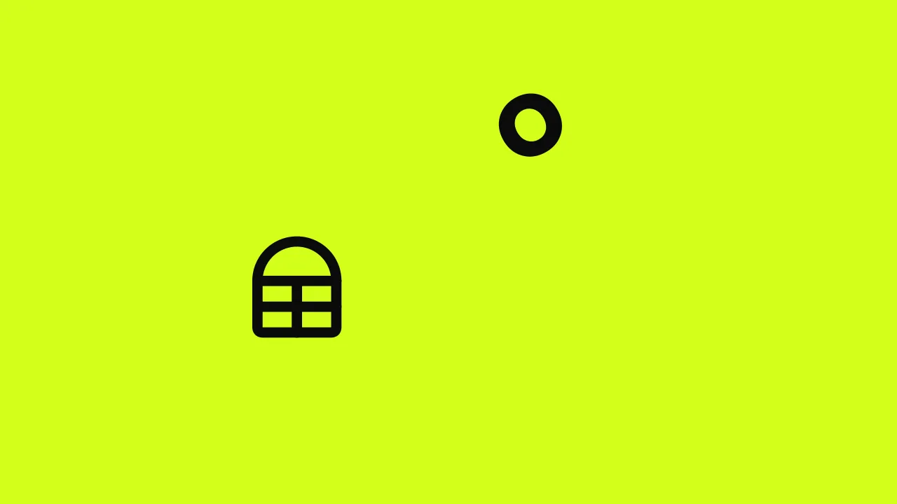
#d2ff1a。印と、右上から落ちる途中の o。kady と .work はまだない。
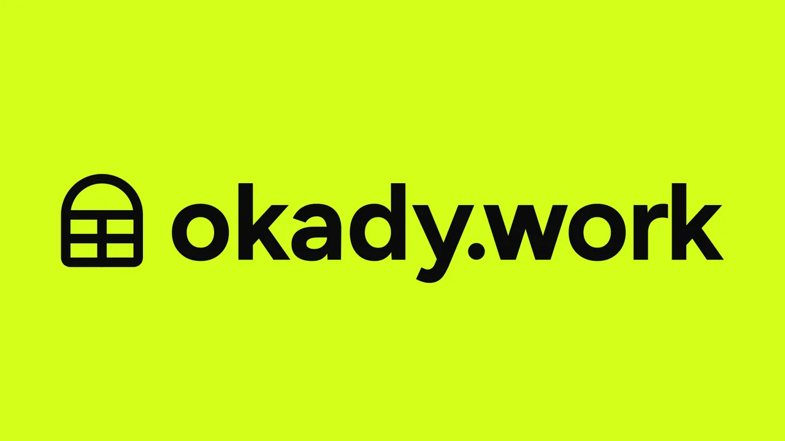
（ロゴのみ）
（なし）
声 0字 ／ 画面 0字
ロゴの形・書体・色・比率は変えない。背景は #d2ff1a。ロゴ以外を重ねない。本編のライム使用はしない。
リポジトリ直下の ../okady-work-logo.svg のタイミングを、フレーム時刻から再現する。0〜2.6秒は o が落ちてバウンドし定位置へ。2.6〜3.2秒は全体が左へスライド。3.0〜4.0秒は「.work」が一文字ずつ出る。4.0秒で完成し、1秒保持する。保持は 1〜1.5秒の範囲で調整してよい。その場合ロゴ区間は 5〜5.5秒。本編からの切り替えは勢いでよい。ロゴ自体の動きは変えない。
なし。ロゴの規定を差し替え候補にしない。
詳細（ここから下は補足）
声・文字・素材の分担
| 層 | 担うこと |
|---|---|
| 声 | 学び・出会い、疲れ、作業の機会損失、今の生活、予防の実践、無理をする留保、本人の結論。 |
| 文字 | 得られる／失われるを中心とする短い句。声の全文字幕にはしない。 |
| 図 | 一つのキャパの中で得たものが残ることと、回復の余白が狭まること。外に残る札は、使えなかった時間。 |
| イラスト | 07で自分以外とも使う時間、08で疲れを溜める前の休息、09で飲みすぎない選択を具体化する。 |
企画側／制作側
企画側は、主張・文言・声の原稿・構成・開始と終了の絵コンテ・採用イラスト3点・使用区間・切り取り方・音の条件を渡します。制作側は、図形と文字の仕上げ、Bロールの窓と寄り引き、合成、再生確認、書き出しを担当します。絵の完成形と運動の細部は制作側の裁量です。
図の意味（同じ一つの箱）、得たものが消えないこと、余白を全回復させないこと、言葉の対比、医療表現を使わないことは維持してください。不足する写真・動画・イラストの調達は企画側へ返してください。音声ファイルの事前同梱は不要。音声のAPI生成は明示依頼の範囲だけで行います。
デザインシステム（映像）
- 1920×1080・30fps。明るい紙色
#F6F3EC、墨#1C1915。本編にライムは使わない。 - 文字は Noto Sans JP相当、400・700、詰め組（palt）。行や語の塊で動かし、文字の形を崩さない。
- 共通の箱の中に意味を集めるが、画面のレイアウトは、対になる二行、箱内の内訳、上下の大小、外に残る札、イラスト窓、結びの階段と変える。
- 安全域は目安として左右80px・上下64px。本編では全カットを0.25秒間隔で検査し、左右40px・上下30pxを割る文字と、意図しない重なりを修正する。
- 文字と図・イラストは別の層。図のカメラ運動で文字を切らない。イラストの上に読みにくい文字を重ねない。
- イラストは07〜09で同じ暖かいガッシュ・鉛筆の質感に揃える。共通の箱の材質を一部だけ変えない。
動きの言語
three.jsを図の層に推奨します。文字はDOM／CSS等の独立した層。フレーム時刻から寄り・横移動・回転・境界の位置を決め、シークしても同じ状態にします。入りと抜けだけでなく、読む間も行の塊・構図・画面を大きく動かします。常時の文字揺れ、脈動、意味のない粒子は使いません。
Dolly inは図へ寄る動き、Truckは横移動、Whip panは短く勢いのある横の受け渡し、Zoom outは図を引いて文言の面積を作る動きです。各カットの動きは狙いであり、秒数・軌道・イージングの固定手順ではありません。
07〜09は静止画自体に人の動きを捏造せず、切り取り窓とカメラの動きで挿入します。画像の品質を確認するため、07の文字・窓・小さな箱を組み合わせた代表区間を等速で試してから全編へ展開してください。演出参考と適合確認は別資料です。
記号と色
| 要素 | 意味 |
|---|---|
| 共通の外枠 | 自分のキャパ。別メーターに分けない。実測の容量・医療指標ではない。 |
琥珀 #E07A2F | 得られたもの。学び・新しい出会い・縁が内訳。疲れた後も消さない。 |
灰 #D6CEC0 | 移動・予定などの負荷。これが白い領域を狭める。家族の価値を灰で表さない。 |
白い領域／緑の境界 #2F6F62 | 回復に使える余白。後半はごく細く残す。予防で全回復した絵にはしない。 |
| 箱の外に残る札 | やれたはずの作業や使えたはずの時間。得たものの価値と単純に相殺しない。 |
採用素材
イラスト3点を採用。実写写真・外部の生成動画は使いません。地名・会社名を出さず、人物は架空の後ろ姿で、本人や家族の記録と誤認させない画風です。「子供」「家族」「奥さん」「娘」の呼称を画面・声には出しません。
| ファイル | 役割・採用区間 | 切り取りと配置 |
|---|---|---|
| family-time.webp | 07／0:52–0:55（参考）。一緒に本を見る二人。自分以外とも使う時間。 | 右側の人物と本を含める。顔を見せず、左の文言と別の窓へ。二人を灰色の負荷に置かない。 |
| rest-before-exhaustion.webp | 08／1:03–1:06（参考）。パソコンを閉じ、休む準備。 | パソコン・水・椅子を残す。医療行為として見せない。文言は左の紙色の面。 |
| drink-in-moderation.webp | 09／1:10–1:13（参考）。酒器と水。飲みすぎない。 | 二つのグラスを残し、酒器から水へ移動。銘柄・店名・ラベルなし。 |
assets/storyboard/cut-01-start.webp〜cut-11-end.webp | 各カットの開始・終了の構図 | 1280×720。完成動画ではない。 |
assets/broll/*.png | 採用3点の生成原本 | 編集用WebPと区別して保存。 |
../okady-work-logo.svg | 11の規定ロゴ／1:31–1:36 | リポジトリ共通素材。別環境へ渡す際は原本を含める。 |
採用素材は各1920×1080のWebP。生成方法・プロンプト・原本・費用確認状況は 素材記録。制作側の入口はこの採用表です。
音
BGM・効果音は制作側の後工程。今の作業は企画とイラストです。過去作の曲を標準で流用しません。声の邪魔をしない音量で、画面全体の運動を支える拍・アクセント・展開を持たせます。ゆっくりした音楽へ合わせて映像を弱めないでください。
01〜04は得られるものの推進、05〜07は余白が詰まる密度、08で立ち止まるアクセント、09で留保、10で結び、11で収束。音はロゴの終了まで覆います。冒頭・中盤・後半の実映像と合わせて試聴し、単体で合格にしません。
ナレーションは各カットの原稿。サービス選定や音声の生成は今回の企画改稿に含めません。APIキーの存在を生成許可とは扱いません。
根拠
原稿との対応は references.md。地名・会社名・訪問先・空港名、時刻・件数・料理や道具の固有名は出しません。ユーザー指定により、生活の具体像はイラストで補い、家族の呼称は使いません。予防接種・注射器・医療機関の絵は採用しません。
04は出張に得るものがあるという留保、09は予防が分かっていても無理するという留保、07は今の生活という条件を残します。結びの表現だけは要判断3です。
完成条件・確認状態
- 冒頭が「刺激は、得られる。余白は、失われる。」になっている。
- 一つの箱の中に得られたものと回復の余白があり、余白が失われても学び・出会い・縁が残る。
- 失う側に、やれたはずの作業や使えた時間が残る。家族の存在を負荷の原因として押しつぶさない。
- 07〜09は採用イラストの実ファイルから合成し、予防に医療表現を入れない。
- 地名・会社名と家族の呼称を出さない。
- 08以降の白い領域は細いまま。全回復や万能な予防を保証しない。
- 文字のはみ出し・意図しない重なりを検査し、代表区間の等速再生を確認した後、全編を仕上げる。
- 最後は規定ロゴ。アニメーションと保持・音の終わりを実際に再生して確認する。
今回の確認対象は、企画書・全22枚の絵コンテ・採用イラスト3点です。本編の運動・ナレーション・BGM・ロゴの等速再生は未制作／未確認です。静止画の構図確認を、動画の躍動感の合格とはしません。